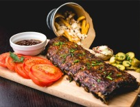
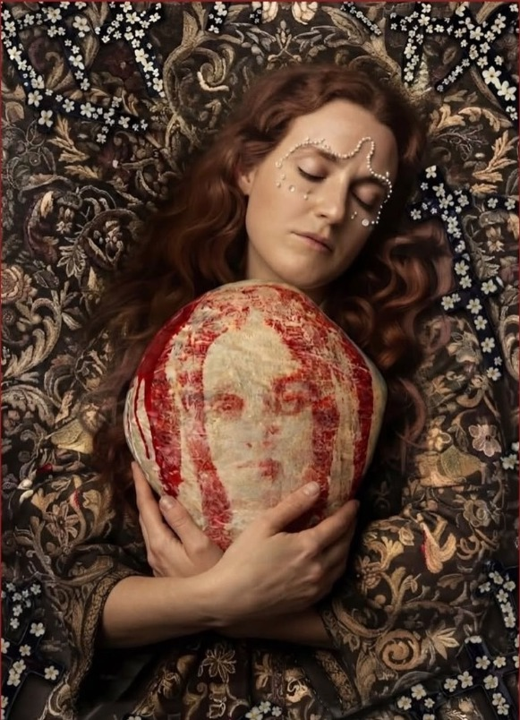
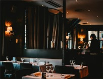
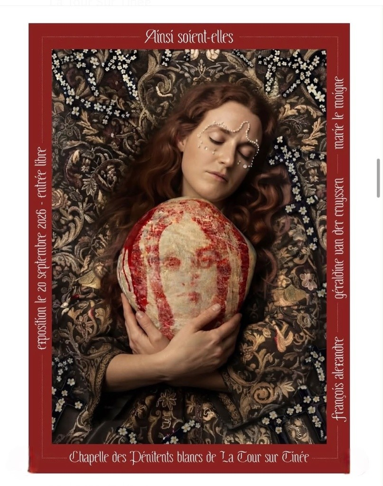
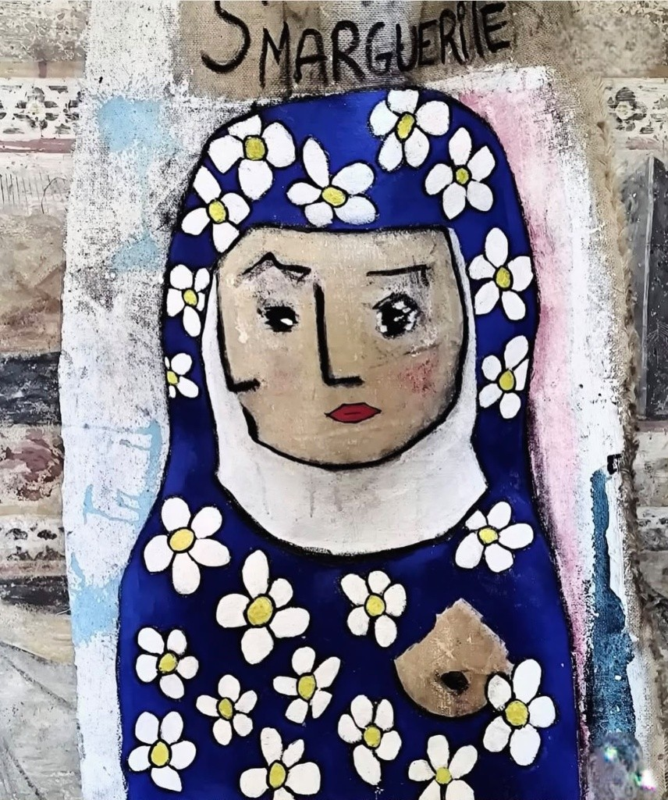
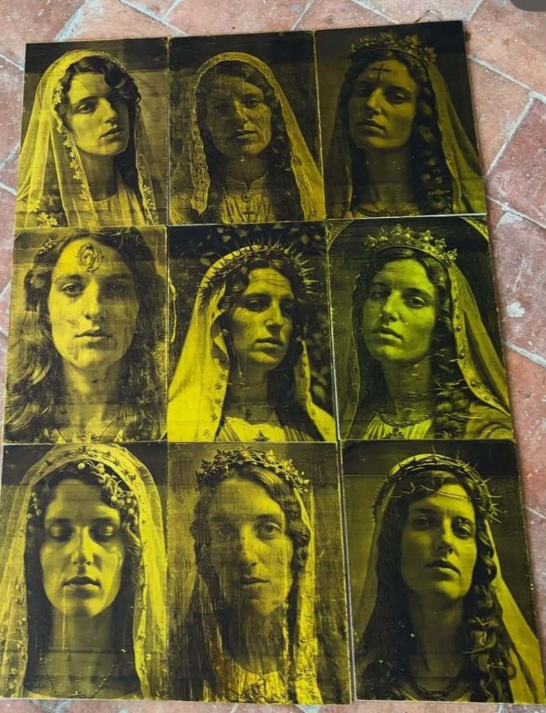

L’INSPIRATION PLASTIQUE
Pigments naturels, dorures à la feuille d’or comestible et sauces texturées comme des empâtements à l’huile de lin et de noix.

« Goûter un tableau à la lueur des bougies : une célébration théâtrale de la matière, des pigments et des saveurs méditerranéennes autour de l’exposition Ainsi soient-elles de François Alexandre. »
« Perché sur le promontoire légendaire de Nice, le Château Bellanda orchestre une rencontre secrète entre la peinture de maître et la haute gastronomie. Ici, chaque mets convoque la palette chromatique, l’iconographie sacrée et le clair-obscur d’une époque révolue. »

Pigments naturels, dorures à la feuille d’or comestible et sauces texturées comme des empâtements à l’huile de lin et de noix.

Bougies de cire d’abeille pure, reflets d’argent ciselé et partitions de clavecin pour une résonance émotionnelle totale.
Exposition « Ainsi soient-elles » • Avec Géraldine Van der Cruyssen & Marie Le Moigne
« On ne dira jamais par des phrases, ce que la peinture fait. [...] peindre ne vaut que pour dire ce qui ne peut se dire... »
Figure singulière de la scène plastique azuréenne, François Alexandre travaille la matière brute comme une relique vivante : toile de jute sauvage, denim cousu, cire fondue, pigments bleu outremer, terre d’ocre et dorures sacrées. De la Chapelle des Pénitents blancs de La Tour-sur-Tinée jusqu’aux voûtes historiques de la Tour Bellanda à Nice, ses figures féminines couronnées de marguerites ou d’épines interrogent le sacré, la mémoire et la grâce.
Avant de passer à table, chaque convive déambule librement entre la terrasse panoramique du Château, la salle des chevalets au vitrail et le Salon du Café de l’Artiste où sont exposées les toiles originales.

Dialogue plastique et photographique unissant François Alexandre, Géraldine Van der Cruyssen et Marie Le Moigne autour du masque et du sacré féminin.

Icône contemporaine au manteau bleu roi semé de marguerites blanches et cœur de jute apparent, exposée au Salon du Café de l’Artiste.

Neuf visages hiératiques voilés et couronnés d’épines ou d’orfèvrerie, installés face à la grande table aux chandelles du Château.